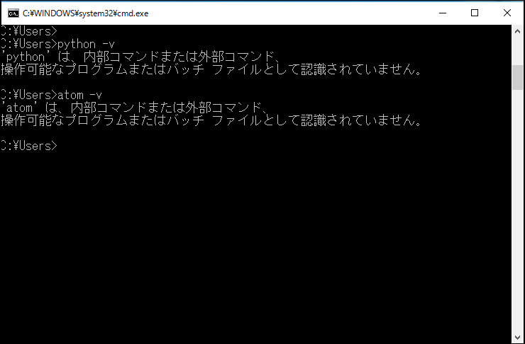
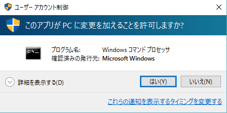
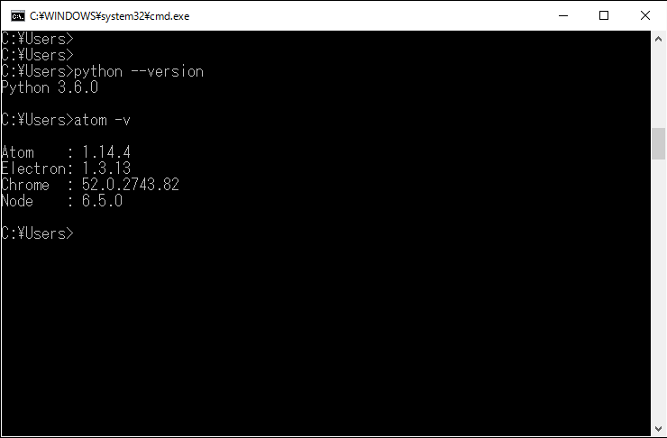

Kuroite
Kuroite
envilderの紹介
envilder
名称説明
builder + environment = env builder
使用言語
PowerShell
概要
ダブルクリックで，環境構築の自動化を補助するツール．
動作例
開発環境を構築する前
現段階では，PythonとAtomがインストールされていない．
envilderによる環境構築
使用方法に書かれたとおりに実行する．
実行許可画面
管理者権限で実行することを許可する．
開発環境を構築した後
envilderを実行した結果，PythonとAtomがインストールされている．
このスクリプトは，3つの設定と1回のダブルクリックで，ソフトウェアのインストールを補助できる．
おすすめな点
通常Windowsは，ソフトのインストール手順として，
- 公式サイトAを訪問
- Windowsインストーラーをダウンロード
- インストーラーを起動
- 公式サイトBを訪問
envilderがあれば,
- envilderをダウンロードする
- 3か所設定をする
- 必須
- インストールするソフトを列挙
- 任意
- インストールするソフトに関係するPathを列挙
- 起動手順を列挙
- build_environmentをダブルクリック
メリットとしては，以下の項目が挙げられる．
- バージョン指定が可能
- USBにインストーラーをダウンロードしておく方法と異なり，常に最新版が使用できる
- バージョンを指定しておけば，そのバージョンのインストールも出来る
- インストールの許可をするYesの回数が1回に減る
- 1度初期設定をすれば，何度でもダブルクリック1回で同じ環境に出来る
- OSを初期化したとき
- OSをクラッシュしてしまったとき
- 学校PCのような，シャットダウンで初期状態に戻る仕様のとき
- インストールしたソフトを一斉にアップデート可能
使用方法
- 以下のように設定ファイルを書き直す(readme.mdから抜粋)．
* envilder\config\scripts.config + txt形式 起動させたいスクリプトを下記の通りに入れてください - envilder(root)からの相対パス - 1つのスクリプトファイルにつき1行 * envilder\config\packages.config + xml形式- package_name にはインストールしたいパッケージ名をいれてください - インストールしたいパッケージ [パッケージサイト](https://chocolatey.org/packages)からお探しください * envilder\config\pathes.config + xml形式 - path\to\file には環境変数のPathに追加したいpathをいれてください
- 設定ファイルで指定したものをもとに実行
実行環境
envilderは，以下の環境で動作する．
- envilderの依存ソフト
- Command prompt
- Windows PowerShell
- Chocolatey
- 開発動作環境
- 管理者権限
- OS : Windows 10 Pro (ver. 1511)
- システム : x64
- メモリ : 8.00 GB
- 必須動作環境
- 管理者権限
- ソフトのインストールで必要
- Windows 8 以上
- 今後確認予定
- Command prompt と PowerShell のpathが通っている
- Internet 接続
制作のきっかけ
生活をするうえで，下記理由から毎回ソフトのインストールを手動で行っていたので，何とか自動化できないかと考えていた．
- 学校のPCはシャットダウンをすると初期設定に戻るので，毎回環境を構築しなければならなかったから.
- 家からNotePCを持ち込むとき，かさばる・重いといった手間が嫌だったから.
- NotePCで，Windows OSを1度の自主初期化，2度の強制クラッシュした経験があり，そのたびに毎回毎回ソフトのインストールをして，開発環境を構築するのが大変だったから.
- 学校PCのPathは，一部が""で囲われている項目があり
- SETX /M PATH "%PATH%;C:\path\to\file"
現在の仕様
- α版であった，ソフトのインストール機能の自動化補助を策定した．
- β版であった，α版の機能の細分化や，Pathの追加，任意scriptの順番変更の機能を策定した．
- 具体的にα，β版は，3つの設定ファイルを編集することで
- 複数ソフトのインストール
- 複数Pathの追加
- 複数スクリプトの実行 任意のscriptを自作して，config\scripts.configに追加
今後の展望・課題
- windows の動作環境確認．
- chocolateyで入らないものを手動で引っ張ってくるshellscriptを書く．
- インストーラー固有のscriptを実行するDirectory treeの策定
- インストーラーのURIからchocolatey以外の手段でインストールする自動化
- ソフトのプラグインを引っ張ってくるshellscriptを設置する．
- ソフト固有のscriptを実行するDirectory treeの策定
- Atomであれば，apm install file-icons などのコマンド
- ソフトの初期設定が記述されている部分を変更するshellscriptを書き，
- ソフト固有の設定を変更・上書きするためのscriptを実行するDirectory treeの策定
- ~/.atom
- ~/.bash_profile
- 開発環境構築後に，起動しておきたいものを起動させておくshellscriptを書き
- user固有のscriptを実行するDirectory treeの策定
- インストール完了後にPowerShellを開いている状態にしたいなど
- 実行時に，PowerShell windowが出ないようにする．
- 設定ファイル以外のPowerShellをexeといったバイナリ形式に変更する．
- 実行ファイルのiconを変更する.
- pathの追加時に少しバグが見られたので，バグ取りをする．
- 追加したPathをアンインストールの時に削除する．
最後に
- Chocolateyを教えてくれたblogサイトの人々や，制作を共同で行ってくれた友人，Chocolateyソフトのおかげでこのようなツールを作ることが出来ました．
- このツールの掲載写真は，学校で制作しました．
- このように協力してくださり，真に感謝申し上げます．
- なお，このツールはあくまで個人使用目的で制作しました．
- 著作権の関係などがあったので，ツールの公開は見送りました．このPageをもとにぜひ自分たちの自動化ツールを作ってみてはいかがでしょうか．
参考サイト